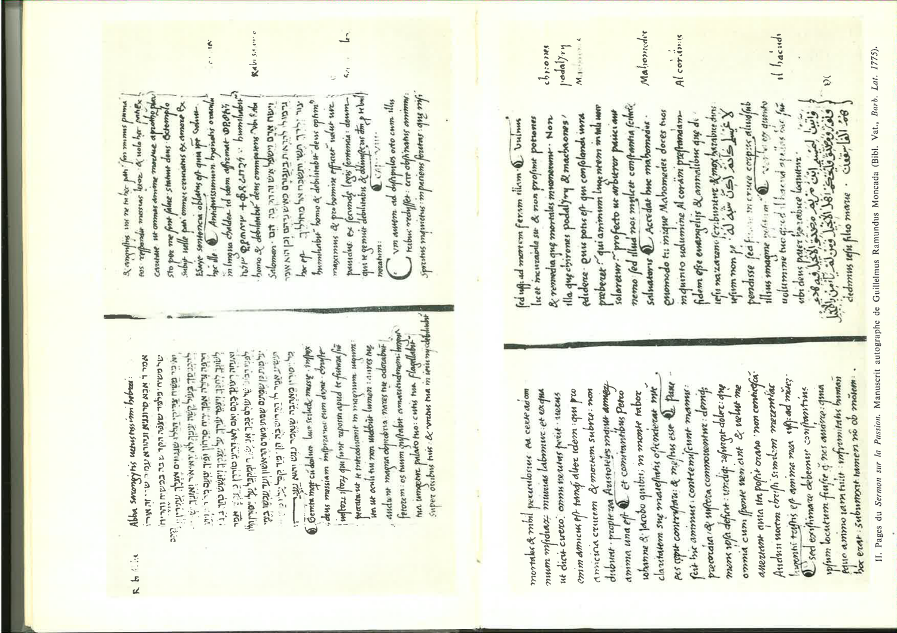

Chunk 6
Pages 19-22
The bulk of this chunk consists of the dense endnotes apparatus to Chapter II — the scholarly scaffolding upon which Secret's narrative rests, comprising citations, references, corrections of prior scholarship, and documentation of source trails. Secret demonstrates his method: systematically engaging primary texts in multiple forms (original manuscripts, medieval printed editions, modern critical editions and facsimiles), consulting the vast secondary scholarship on medieval and Renaissance Kabbalah (particularly the foundational work of Gershom Scholem, whose Zur Geschichte der Anfänge der Kabbala and Zur Geschichte des Kabbalismus established the field), and cross-checking claims against original sources whenever possible. He cites his own earlier articles and monographs published in the leading scholarly journals of medieval and Renaissance studies — Sefarad (the journal dedicated to Spanish Jewry), Bibliothèque d'Humanisme et Renaissance (devoted to Renaissance intellectual history), Rinascimento, and Convivium — demonstrating his deep integration into international scholarly networks. The endnotes reference the Pugio fidei both in its 1651 Paris edition by Joseph de Voisin and in facsimiles that made the medieval text accessible to modern scholars; Maimonides' Moreh Nevukhim (Guide for the Perplexed) in Munk's French translation; the Fortalitium fidei of Alfonso de Spina in multiple Renaissance editions; Paul de Burgos's Scrutinium Scripturarum; multiple versions and commentaries on Pico's Heptaplus and related works; the Sefer Yetzirah and its medieval commentaries; references to Scholem's studies of Abraham Abulafia and the early Kabbalah; and scholarly articles on medieval and Renaissance church-Jewish intellectual exchange. The apparatus thus constitutes a map of the entire scholarly and manuscript tradition surrounding Christian Kabbalah, demonstrating Secret's exhaustive engagement with sources and his commitment to verifying interpretations against primary documentation.
The chapter reproduces three documentary plates of extraordinary historical value. The first is a supposed portrait of Mithridates (labeled as "Portrait supposé de Mithridates"), extracted from an illuminated manuscript page at the Vatican Library (Urbinate Latin 1384, folio 2), bearing an ornamental initial letter from the dedicatory folios of manuscripts containing translations of Arabic works by Guglielmo Raimondo Moncada, the name Mithridates eventually adopted (catalogued in the Catalogus Urbis Latinorum, 1921, with references to Carini's Archivio storico siciliano, 1897). The portrait is labeled as "likely later and legendary rather than contemporary" — Secret's caution about the reliability of such visual evidence reflects critical historiographical awareness. The second plate reproduces pages from Mithridates' autograph Passion sermon (Biblioteca Vaticana, Barb. Lat. 1775), written in his own hand in Latin, displaying the theological sophistication and learned apparatus of his preaching — visible references to biblical texts, Latin theological vocabulary, what appear to be citations and cross-references marking the learned construction of his argument. The OCR transcription of these Latin manuscript pages is heavily garbled by early machine processing, rendering some passages nearly unintelligible to modern readers, yet the original manuscript plates themselves constitute irreplaceable primary-source documentation of the textual and theological world Christian Kabbalists inhabited, the level of Latin learning they commanded, and the methods they employed in synthesizing biblical, patristic, and Jewish sources. The third plate displays a Talmud manuscript (Biblioteca Nazionale Centrale, ital. 116) containing Hebrew extracts from the Talmud translated and annotated for Egidio da Viterbo (Gilles of Viterbo), one of the greatest Christian Hebraists of the early sixteenth century and a cardinal of the Roman Church. This manuscript testifies to the direct engagement of high ecclesiastical authority with rabbinic sources, mediated through the labor of Jewish and convert-scholars who provided translations and commentary. Again, the OCR machine transcription renders the Hebrew and Latin heavily corrupted, but the original pages show unmistakably the hybrid textuality of Christian Kabbalist scholarship — Hebrew source texts interspersed with Latin translation, glosses, and theological commentary, representing the intense linguistic and intellectual labor required to appropriate Jewish mysticism for Christian purposes.
Chapter III opens with the heading "Pic de la Mirandole et le milieu italien de la kabbale chrétienne" (Pico della Mirandola and the Italian Milieu of Christian Kabbalah), marking a crucial historiographical and geographical pivot away from the Spanish apologetic tradition toward Italy and toward the figure most intensively studied and celebrated in all Renaissance Kabbalah scholarship — Giovanni Pico della Mirandola, the philosopher whose vision of integrative synthesis and mystical concordance between all intellectual and religious traditions would define the apotheosis of Christian Kabbalah. Secret opens with a careful historiographical correction regarding the actual sources and formation of Pico's kabbalistic learning, challenging simplified narratives of influence. He notes that Pico's celebrated Oratio de hominis dignitate (Oration on the Dignity of Man), which famously opened the notorious controversy of 1486 when Pico announced his 900 philosophical theses to the Roman public, echoes quite deliberately in its very title and philosophical concerns the humanist philosopher Giannozzo Manetti (1396-1459), the Florentine humanist and civic orator who was himself a serious and accomplished Hebraist, who had personally assembled an impressive collection of Hebrew manuscripts through his diplomatic travels and his networks with Italian Jewish communities (many of which manuscripts eventually reached the Vatican Library), and who had written an Adversus Judæos (Against the Jews) text explicitly intended to renew the Vulgate translation through fresh engagement with Hebrew sources and Hebrew philology. Manetti had deliberately cultivated relations with learned Jews and Christian converts, creating and maintaining networks of scholarly and textual exchange that defined the intellectual ecology of fifteenth-century Florence. Yet Secret crucially and explicitly argues that despite the undeniable Hebrew learning of these figures — neither Giannozzo Manetti, nor Pietro Bruto (the Venetian apologist), nor Marsilio Ficin (the great Florentine Platonic philosopher-priest and translator of Plato who knew and cited certain fragments of the Bahir, the Book of Splendor), nor Ambrogio Traversari (the Camaldolese order's general and humanist scholar who possessed significant Hebrew learning and led Christian engagement with Byzantine and Jewish thought) — none of these important figures, despite their very real and considerable engagement with Hebrew language and Jewish intellectual traditions, actually prepared the flowering and apotheosis of Christian Kabbalah in Italy at its deepest and most mystically refined moment. Rather, Secret demonstrates through reconstruction and documentation that the transformative intellectual role fell specifically and decisively to two figures who were themselves Jewish converts — learned Jewish scholars who had embraced Christianity and deliberately positioned themselves as cultural mediators and translators standing between their former Jewish communities and their adopted Christian world. These two crucial figures were Flavius Mithridates (the Sicilian-born scholar who acquired learning in German universities and became Pico's primary guide to kabbalistic mysticism) and Paul de Heredia (a less well-documented but important convert-scholar whom Pierre Galatino claimed had also taught and instructed Pico della Mirandola), whose roles opened complex and unresolved questions about intellectual genealogy, debt, transmission, and the networks through which Christian Kabbalah took shape — questions that Secret must disentangle through careful biographical reconstruction and documentary analysis.
Flavius Mithridates emerges from Secret's reconstruction of the Chronicle of Volterra — the medieval chronicle providing invaluable biographical information on converts, humanists, and important ecclesiastical figures of the fifteenth century. The chronicle describes for the year 1481 a figure known as "Guillaume de Sicile" (William of Sicily), identified as a member of the household of the cardinal of Molfetta, learned in Hebrew, Greek, and Latin, and accomplished in a sermon that demonstrated remarkable erudition and eloquence. This William of Sicily is now identified by scholars as Juda Samuel ben Nissim Abul Farag of Girgenti (Agrigento) in Sicily, a Jew of learning who, upon baptism, took the Christian name Guglielmo Raimondo Moncada, invoking the name of his godparent or sponsor. His biography exemplifies the common trajectory of convert-apologists: born a Jewish scholar, trained in Hebrew and Jewish learning, recognized within his community for his erudition and eloquence, he embraced Christianity and devoted his intellectual talents to demonstrating that the Hebrew sources and Jewish mystical traditions he had mastered vindicated Christian doctrine. His path led him through the papal court and highest ecclesiastical circles: around 1481 he delivered a celebrated two-hour Passion sermon before Pope Sixtus IV (the formidable Renaissance pope who commissioned the Sistine Chapel frescoes and engaged in numerous military campaigns), and before the assembled cardinals, including Giovanni Battista Cibo, the cardinal of Molfetta, who would himself become Pope Innocent VIII in 1484. The sermon was remarkable for its learned and elaborate attempt to prove the Christian mysteries — the Trinity, the Incarnation, the Passion of Christ — directly from Hebrew and Arabic sources, quoting extensively in the original languages and treating the sacred languages themselves as repositories and vessels of revealed theological truth. The sermon's effect was extraordinary: its novelty, the beauty of its linguistic passages (the audience enjoyed hearing Hebrew and Arabic pronounced by a native speaker), and its theological argumentativeness impressed the pope and cardinals sufficiently to garner them widespread applause.
Yet Moncada's Roman sojourn proved precarious. In 1483 he was implicated in some mysterious violent crime — Secret carefully notes it was "probably homicide" but notes the circumstances remain obscure, whether a crime of passion, political entanglement, or ecclesiastical scandal — that forced him to flee Rome and eventually Italy entirely. By 1485 he had resurfaced in the German lands, where his learning and polyglot abilities earned the admiration of Rudolf Agricola (1444-1485), the great German humanist and educational reformer, who praised him as "a man most learned in all languages, in Latin, Greek, Hebrew, Chaldaic, and Arabic; a theologian moreover, a philosopher, a poet, and to speak plainly, unique in all things." In Germany, Moncada taught Conrad Summenhardt, the Tübingen theology professor, and most importantly Johannes Reuchlin (1455-1522), the man who would become the theorist of Christian Kabbalah proper and the defender of Hebrew learning against anti-Jewish attacks. Summenhardt reports in a treatise published in 1495 that his former master Mithridates had translated for Pope Sixtus IV books of Kabbalah — specifically invoking the seventy hidden books mentioned in IV Esdras (II Esdras in Protestant numbering), a reference Pico himself would later famously cite as authority for the existence of an esoteric Jewish mystical tradition parallel to the written Torah. This detail suggests papal interest in Hebrew mysticism and secret doctrines during the precise years when Pico was beginning to formulate his ambitious synthesis. Secret carefully notes, however, that Mithridates' Passion sermon, despite his evident mastery of Hebrew and knowledge of Jewish traditions, never employs the term "kabbale" and appears instead to draw its exemplars of "ancient Talmudists" from the framework of the Pugio fidei — thus using traditional medieval apologetic weapons rather than the newer, more exotic Christian Kabbalist methods that would emerge in the 1480s and 1490s. The sermon represents a stage of Hebrew learning that precedes full Christian engagement with Kabbalah proper.
The pivotal and transformative moment comes in 1486, when Raimondo Guglielmo Moncada, now professionally and rhetorically styling himself Flavius Mithridates (deliberately adopting the name of the famous Mithridates VI Eupator, king of Pontus, 135-63 BCE, renowned throughout antiquity equally for his extraordinary mastery and knowledge of languages and for his systematic experimental investigations into toxicology and poisons, as well as for his complex diplomacy and military conflicts with Rome), met Pico della Mirandola for crucial intellectual exchange — likely in Rome itself or during one of Pico's frequent travels through Italian cultural centers. From this meeting and subsequent working relationship issued the crucial and transformative labor that would define Pico's mature intellectual project: Mithridates systematically undertook to translate for Pico entire kabbalistic manuscripts from Hebrew and Aramaic into Latin, providing Pico with direct textual access to the very foundational mystical sources — the Zohar (Book of Splendor) in its original Aramaic passages, Joseph Gikatilla's Sha'are Ora (Gates of Light) and Sha'are Tsedek (Gates of Justice), the seminal medieval Spanish Kabbalist systematic explorations of the divine emanations and names, Abraham Abulafia's letter-mystical and ecstatic psychological works and their systematic doctrines of gematria (numerical equivalence), notarikon (acrostic and abbreviative reading), and temurah (letter-permutation), the symbolic and hierarchical machinery of the Sefirot (the divine emanations), the divine names and their mystical permutations and applications — all the foundational textual and theoretical apparatus that would animate Pico's revolutionary synthetic vision and provide him the raw materials for his 900 theses. This translation labor, executed over the years following 1486, fundamentally transformed Pico from a brilliant and polymathic generalist philosopher with Hebrew linguistic interests into a Christian Kabbalist proper in the fullest and most substantive sense — a thinker who could claim direct and intimate engagement with the most sacred texts and sophisticated metaphysical doctrines of medieval Jewish mysticism, and who could consequently construct a comprehensive Christian theology of integration, synthesis, and mystical concordance that incorporated Sefiratic cosmology, letter-mysticism and gematrical theology, and the entire apparatus of kabbalistic thought into a unified and coherent vision of Christian metaphysical truth, Christian Neoplatonism, and Christian moral philosophy. The documentation of this translation work — the manuscript fragments and Pico's marginal annotations — testifies to the intensity and seriousness of the effort, and to Mithridates' role as the indispensable mediator who made Pico's mature accomplishment possible. Without Mithridates' linguistic and scholarly mediation, Pico would have remained a humanist philosopher with Jewish interests rather than a foundational figure in the history of Christian Kabbalah. With Mithridates' assistance, Pico became the defining intellectual authority whose synthetic vision would shape Christian engagement with Kabbalah for the next two centuries and beyond, establishing the hermeneutical and theological templates within which Christian Kabbalists would work, the methodological commitments they would inherit, and the grand vision of cosmic integration and mystical theology that would continue to inspire Christian thinkers from Reuchlin and Postel through the seventeenth-century Cambridge Platonists and Behmen.

Facsimile de colonnes de texte hébreu imprimé